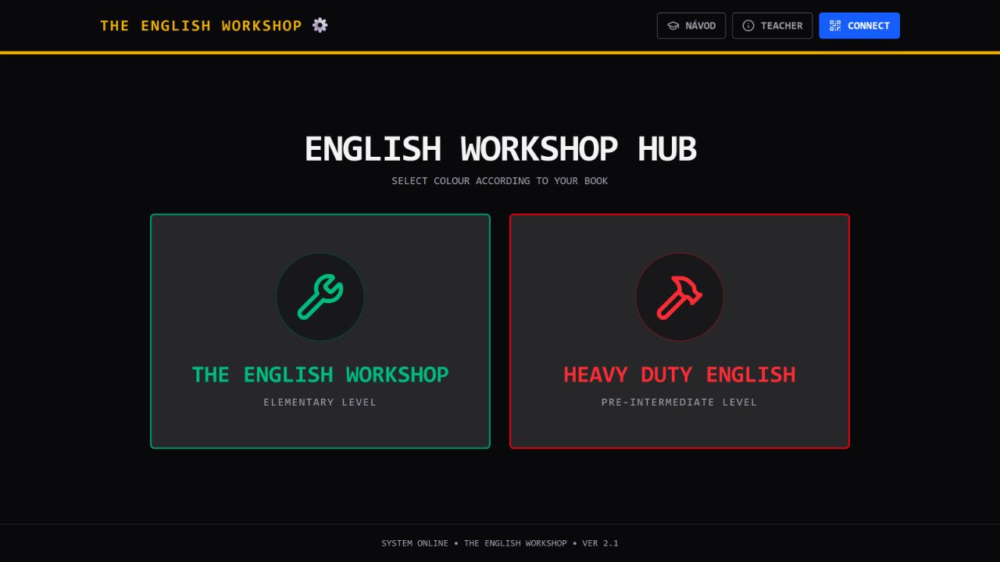
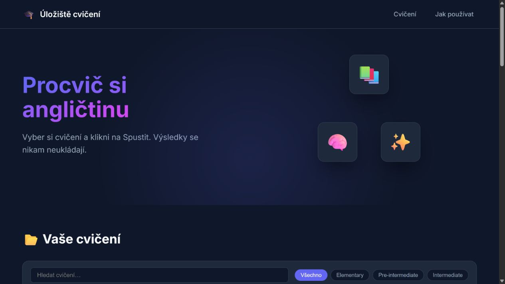
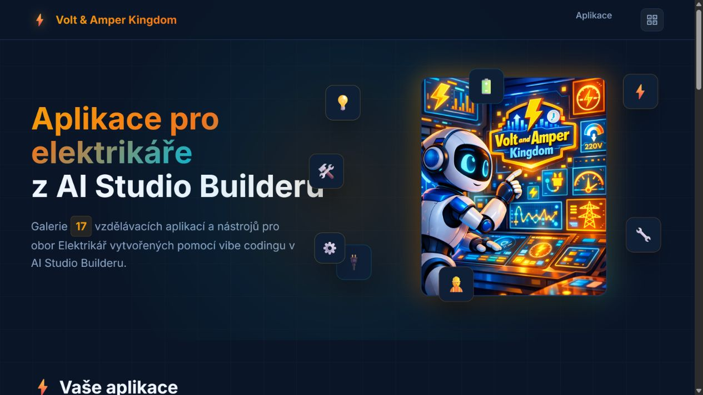
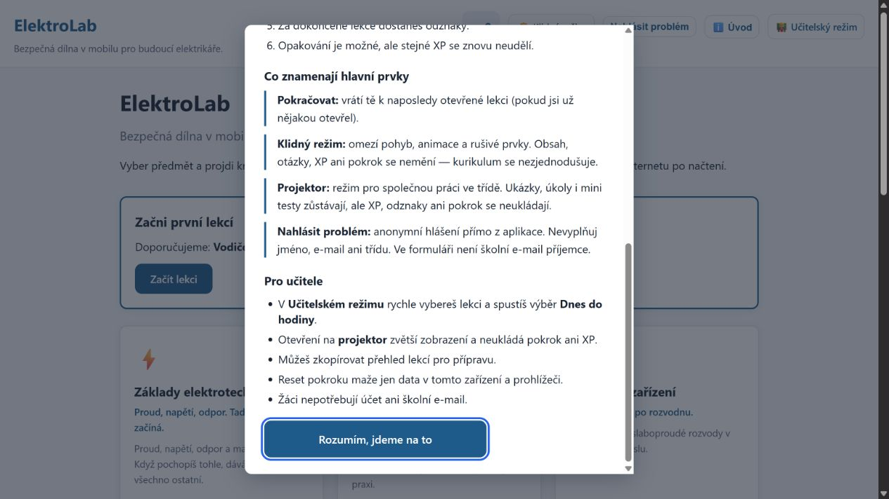
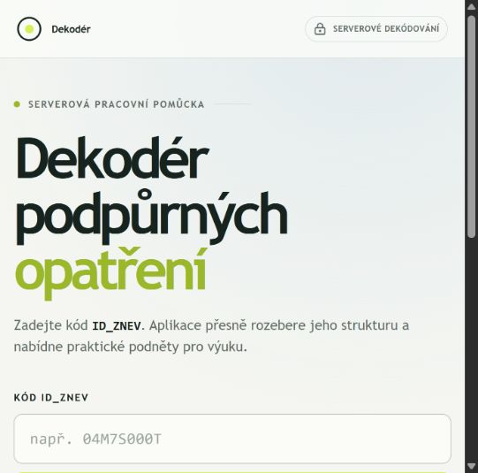
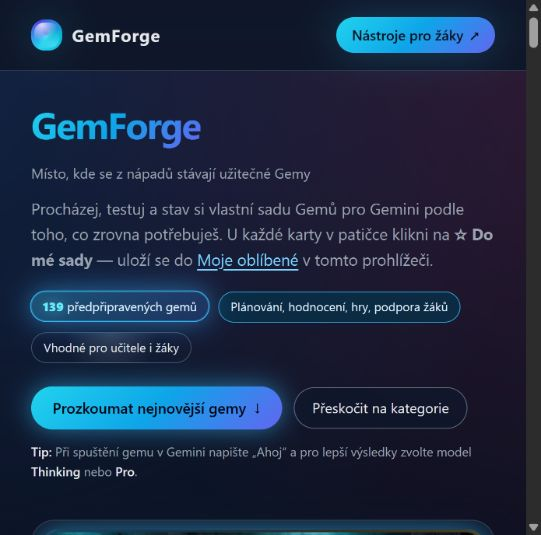
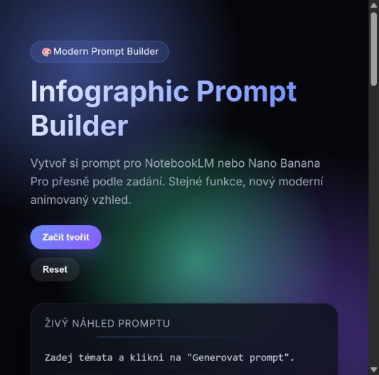
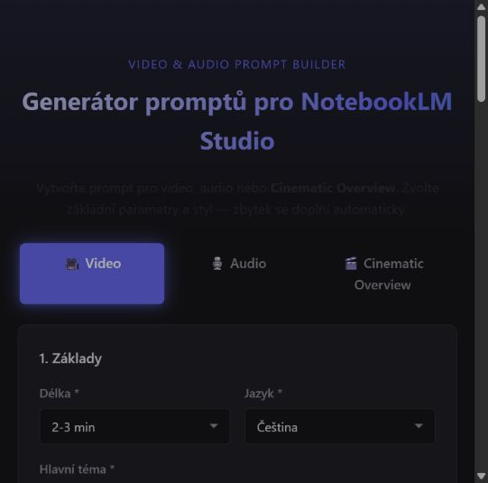
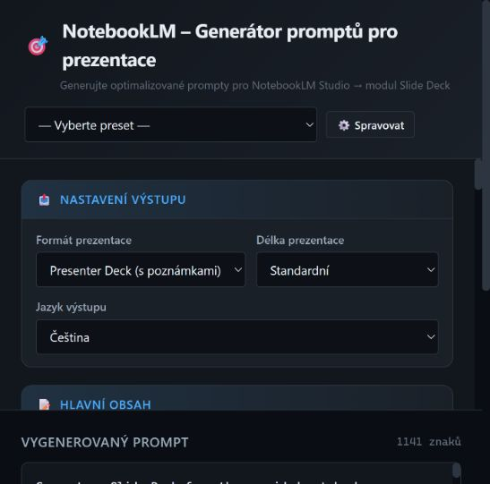

S pomocí vibe codingu může vzniknout malá webová pomůcka přesně pro jednu hodinu, skupinu nebo opakující se učitelský úkol. AI připraví první verzi, ale učitel zůstává autorem zadání, kontrolorem výsledku a člověkem, který rozhoduje o použití ve výuce.
Praktická zkratka:
Nejdřív pojmenujte, co má student s nástrojem dělat. Teprve potom řešte barvy, animace a další vzhled.
Co si může učitel vytvořit
Nemusíte začínat velkým systémem. Vhodný první projekt bývá malý, samostatný a snadno ověřitelný v prohlížeči. Podle cíle hodiny může jít například o:
Interaktivní pracovní list
Otázky, doplňování, třídění nebo krátké úkoly s okamžitou zpětnou vazbou.
Procvičovací aplikaci
Opakování slovní zásoby, pojmů, vzorců nebo kroků pracovního postupu.
Jazykovou hru
Například párování, překlad, třídění vět nebo krátkou konverzační aktivitu.
Generátor a kvíz
Varianty příkladů, otázek, kartiček nebo testu pro samostatnou práci i opakování.
QR aktivitu
Jednoduchou stanovištní aktivitu, která žáka po načtení provede úkolem.
Simulaci nebo model
Bezpečný náhled situace, procesu či technického principu, který lze zkoumat krok za krokem.
Tento seznam není uzavřený. Rozhodující otázka zní: Jakou konkrétní činnost má žák po otevření stránky provést? Pokud na ni neumíte odpovědět jednou větou, je zadání zatím příliš široké.
Ukázky skutečných projektů ze SchoolLabu
SchoolLab je veřejný prostor s hotovými digitálními školními projekty. Následující ukázky vycházejí z jeho aktuálně dostupného rozcestníku; uvádím názvy, popisy a náhledy příslušných veřejných stránek.

The English Workshop
Aplikace vytvořená na základě slovní zásoby z učebnice, která je používána ve výuce. Aplikace obsahuje procvičení formou otáčivých kartiček, nahrávek výslovnosti, testové části s prvky gamifikace. Učitelům umožňuje rychlý tisk krátkých testů.
Otevřít projekt ↗
English Playground
Úložiště interaktivních mini aplikací vytvořených v Google AI Studiu pro výuku. Každá mini aplikace obsahuje QR kód pro rychlé sdílení s žáky během hodiny.
Otevřít projekt ↗
Volt & Amper Kingdom
Sbírka interaktivních mini aplikací tvořených v Google AI Studiu pro budoucí elektrikáře.
Otevřít projekt ↗
ElektroLab
Pilotní verze projektu, který bude obsahovat témata všech odborných předmětů oboru elektrikář. Ve skill.md projektu je připravena 3D verze všech interaktivně probíraných témat.
Otevřít projekt ↗
PO do praxe
Dekodér kódů podpůrných opatření. Po vložení kódu se zobrazí požadované úpravy pro výuku ve třídě a instrukce pro úpravy pracovních listů, testů, které jsou připraveny pro snadné kopírování do AI nástrojů.
Otevřít projekt ↗
GemForge
Katalog předpřipravených Gemů pro Gemini, kde mohou učitelé i žáci procházet nástroje, testovat je a sestavit si vlastní sadu.
Otevřít projekt ↗
Infographic Prompt Builder
Vytvoř si prompt pro Gemini Notebook nebo Nano Banana Pro přesně podle zadání v moderním nástroji pro tvorbu infografik.
Otevřít projekt ↗
Video & Audio Prompt Builder
Generátor promptů pro Gemini Notebook pro video, audio nebo Cinematic Overview.
Otevřít projekt ↗
Gemini Notebook – Generátor promptů pro prezentace
Generátor optimalizovaných promptů pro Gemini Notebook a modul Slide Deck.
Otevřít projekt ↗Prohlédnout všechny projekty
SchoolLab sdružuje veřejné digitální školní projekty pro výuku, procvičování i vlastní objevování.
Jak vypadá první zadání
Dobré zadání popisuje vzdělávací cíl i hranice. Například místo obecného „udělej mi aplikaci na angličtinu“ zkuste:
Cíl: žák procvičí překlad krátkých vět v přítomném čase prostém.
Požaduji 15 vět od lehkých po těžší, textové pole pro odpověď, možnost odeslání, zobrazení správného řešení a skóre na konci. Aplikace musí fungovat v mobilním prohlížeči, bez přihlášení a bez ukládání osobních údajů. Připrav nejprve návrh obrazovek a dat, potom první HTML prototyp.
Takové zadání AI pomůže rozdělit na menší kroky. Učitel může po každém kroku říct, co je správně, co chybí a co je potřeba změnit.
Co musí učitel hlídat
První výstup může vypadat přesvědčivě a přesto být pro výuku nepoužitelný. Před sdílením ověřte alespoň:
- Obsah: jsou otázky, řešení, pojmy a příklady správně?
- Pedagogiku: odpovídá aktivita věku, cíli hodiny a času, který máte?
- Ovládání: pozná žák, co má udělat, a funguje to na mobilu i počítači?
- Techniku: fungují všechny odpovědi, tlačítka, odkazy a případné náhodné varianty?
- Soukromí: nepotřebuje nástroj zbytečné osobní údaje nebo účet?
Čím větší roli hraje faktická přesnost nebo bezpečnost, tím méně stačí rychlý náhled. Nástroj nejdřív projděte sami a pokud je to možné, vyzkoušejte ho s kolegou nebo malou skupinou.
Od prvního prototypu k použitelnému materiálu
- Vyberte malý, opakující se problém z vlastní výuky.
- Popište žáka, cíl, vstupy, očekávaný výstup a omezení.
- Nechte AI vytvořit nejprve jednoduchý prototyp.
- Testujte jednu věc po druhé a zadávejte konkrétní opravy.
- Ověřte obsah, funkčnost, přístupnost a chování na zařízení, které budou používat žáci.
- Teprve potom nástroj sdílejte nebo publikujte.
Vibe coding není automat na dokonalé aplikace.
Je to rychlejší cesta od učitelské potřeby k prototypu, který musí projít lidskou kontrolou.
Kam pokračovat
Pokud chcete začít od základního vysvětlení pojmu a nástrojů, vraťte se na stránku Vibe Coding. Najdete tam úvod, příklady zadání i odkazy na nástroje.